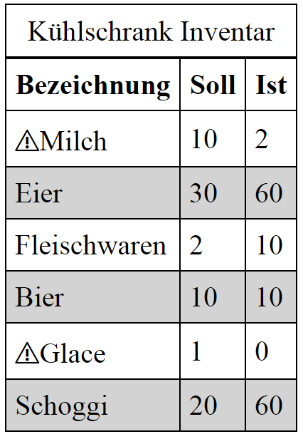

⇦
WED1 - CSS Selektoren
Theorie Grundlagen
Beantworten Sie die Fragen und machen Sie je ein Beispiel.
- Wie werden folgende Selektoren definiert?
- ID-Selektor
- Typ-Selektor
- Universal-Selektor
- Attribute-Selektor
- Klassen-Selektor
-
Was ist der Unterschied zwischen dem Selektor
h1 > div und h1 div und welcher ist weshalb zu bevorzugen?
- #myid
- div
- *
- [href]
- .alert
Mit ">" wird nur direkte Nachfahren selektiert. Ohne ">" werden alle Nachfahren selektiert.
h1 > div ist h1 div vorzuziehen. Grund: Performance
Table Stylen
Stylen Sie die Table in der Vorlage. Nutzen Sie ausschliesslich CSS um die Tabelle wie folgt zu Stylen:
Ändern Sie die Hintergrundfarbe im Hover-State.
Vergessen Sie das Warn-Zeichen nicht. Am HTML dürfen keine Anpassungen vorgenommen werden.

List Stylen
Lesen Sie folgendes Kapitel von List-Style
- Wie kann bei einer Liste das Aufzählungszeichen geändert werden?
- Was für Aufzählungszeichen sind möglich?
- Wie kann man ein Bild als Aufzählungszeichen verwenden werden?
- Versuchen Sie eines einzubinden!
- Gab es Probleme?
- Weshalb ist das Aufzählungszeichen bei der nested Liste anders als bei der äusseren? Nutzen Sie die Developer Tools.
- Was ist der Unterschied zwischen
list-style-position: outside und list-style-position: inside?
Kontrollieren Sie ihre Antworten mit dem
Wiki.
Selektoren Rätsel
Definieren Sie für folgende Problemstellungen einen geeigneten Selektor
Tipp: Definieren Sie auch ein HTML um die Selektoren zu testen
-
Alle h1 sollen eine rote Schriftfarbe besitzen.
-
Der erste Paragraph nach einem h1 soll kursive geschrieben sein. Alle andern nicht.
-
Jedes zweite List-Element soll eine blaue Schriftfarbe besitzen.
-
List Elemente deren Index durch 3 aber nicht durch 2 teilbar ist, sollen in roter Farbe dargestellt werden.
-
Alle h1, die nicht direkt im body tag liegen, sollen eine kleinere Schriftgrösse besitzen.
-
Alle links ohne "href" Attribute sollen durchgestrichen dargestellt werden.
-
Stellen Sie sich eigene Aufgaben um sich mit den Selektoren vertraut zu machen.